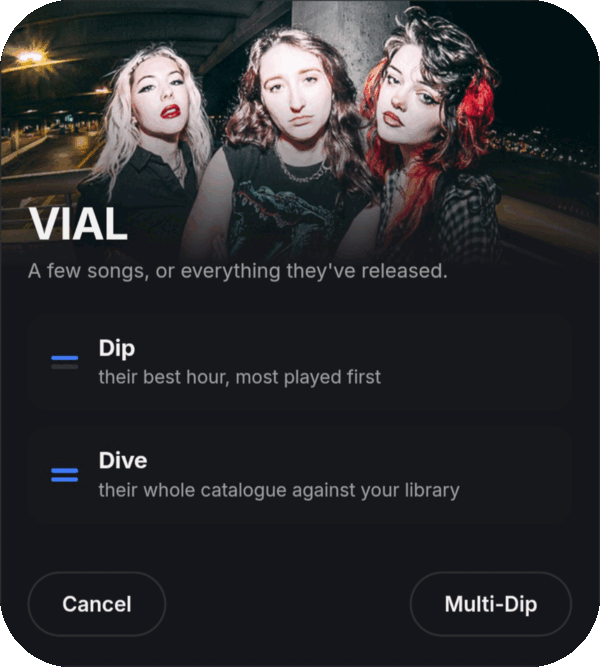
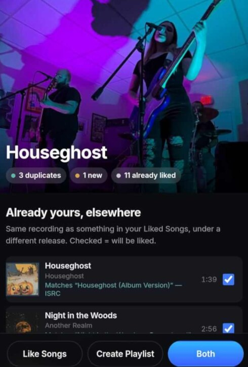
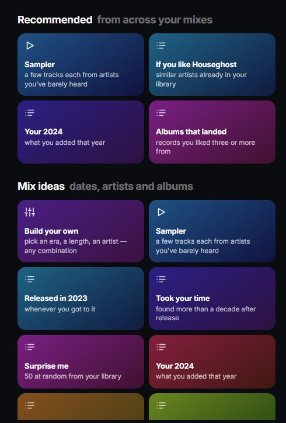
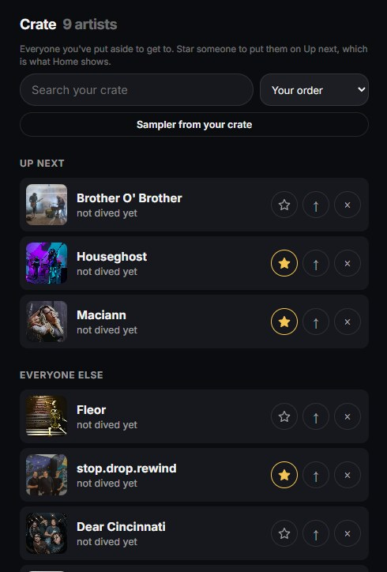
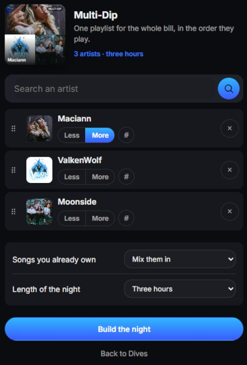

Hear it all.
DeepDive learns what is in your library, finds missing tracks and puts them in a playlist for you to enjoy.
How far in?
Dip gives you the most popular tracks first. Dive scans the entire discography. Multi-Dip lets you pick multiple artists in order to make a playlist out of any lineup you want.

Know what you missed
DeepDive compares recordings rather than releases, so it knows the difference between an unheard song and a duplicate, letting you quickly add to your library while creating your playlist.

Mixes that keep it personal
From your library, DeepDive can generate mixes based on when you found songs, release dates, even track length. With a Last.fm key you can also create similar artist discovery and genre mixes.

A crate to dig through
Save artists for later dives, with an "Up next" feature that keeps your priorities in order.

Prepare for your show
Multi-Dip lets you grab artists and make a unique lineup, allowing you to create a multi-hour playlist of their most popular songs to emulate a set list.

DeepDive CAN'T collect your data
DeepDive has no backend. There is no server, database or account system. Everything is stored on your device within the browser. The only external requests are to Spotify and Last.fm as needed.
Found a problem?
Issues are monitored. Report bugs or ask for features on GitHub.
Report an issueTry it out
Only takes two minutes to set up.
Open DeepDive